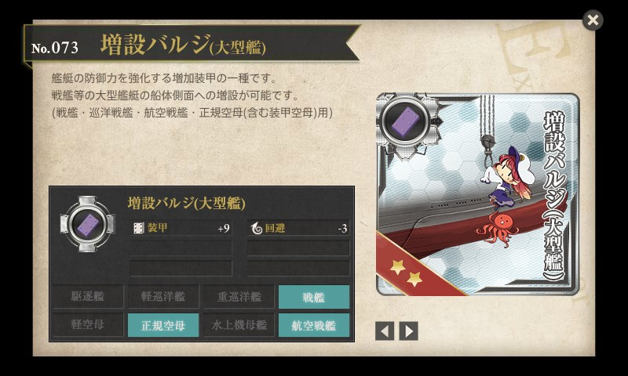
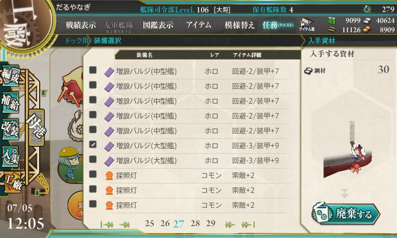
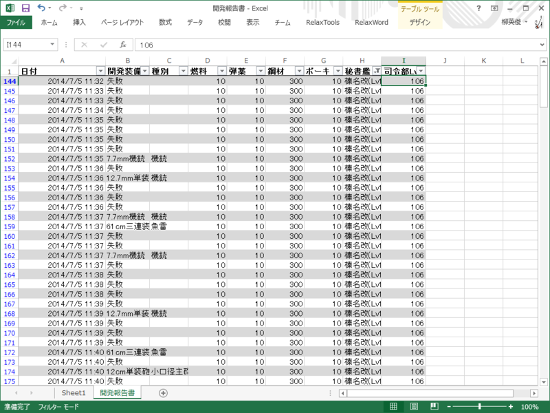
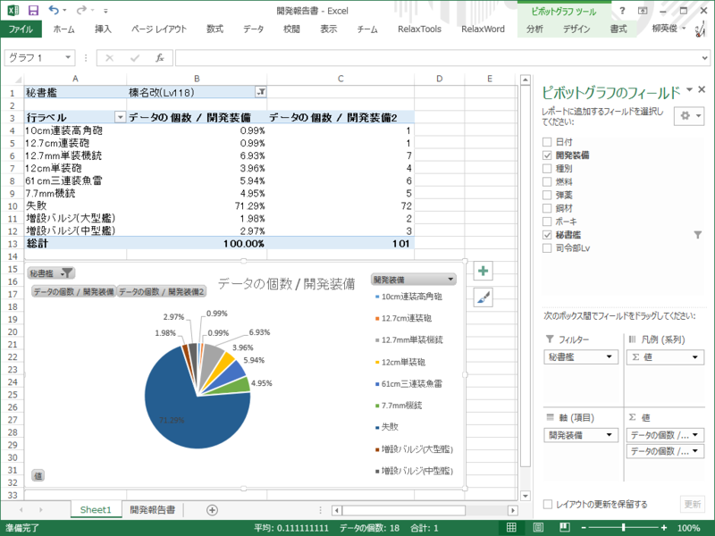
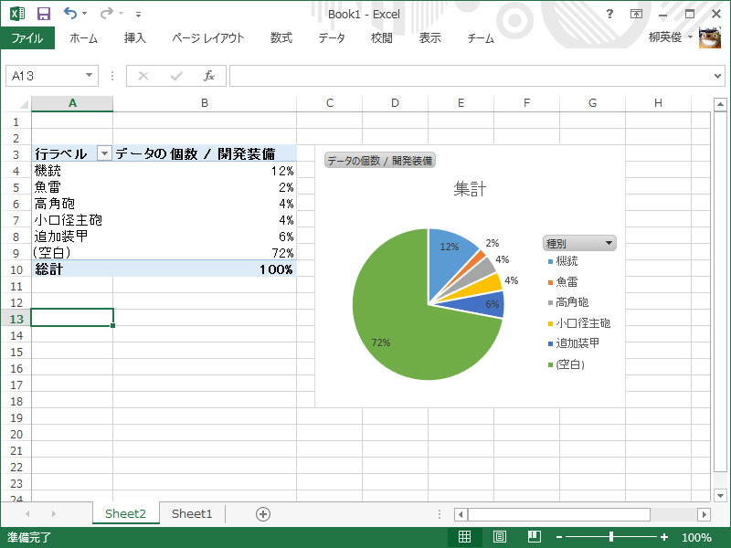

艦これ：増設バルジ（大型艦）レシピ
公開日：

06▼装備の【開発】拡張
「開発」において【増設バルジ(大型艦)】が開発可能となります。
#艦これ
— 「艦これ」開発/運営 (@KanColle_STAFF) 2014, 7月 4
廃棄して得られる資材は鋼材30なので、10/10/300/10 のレシピを100回試してみる（実際は勢い余って101回やった）。秘書艦は榛名。

36回目にしてやっと大型バルジをゲット。

もちろんこれだけの試行回数で確たることは言えないのだけれど、だいたい
- 中型バルジ：3%
- 大型バルジ：2%
- 10cm連装高角砲：1%
って感じみたい。失敗率は70%で、建造資材はあまり消化せずに済むが、鋼材の消費は激しい。とはいえ、わが司令部は鋼材が余りまくりなのであまりいたくはない。
ちなみに中型バルジのレシピ 10/10/120/10 を50回試した時（秘書艦は青葉）は

- 中型バルジ：6%
- 10cm連装高角砲：4%
だった。こちらの失敗率も70%ほど。
鋼材 120 → 300 によって魚雷の割合が増え、その分10㎝連装高角砲の割合が減った感じ（秘書艦娘を榛名 → 青葉にしたからか？ わからぬ）で、バルジが出る確率はおおむね5%と変わらない。この5%を中型と大型で分ける形になった。
追記
Excel のピボットテーブルの使い方がだいぶわかってきた（ぁ